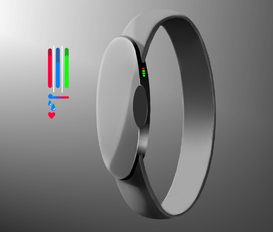
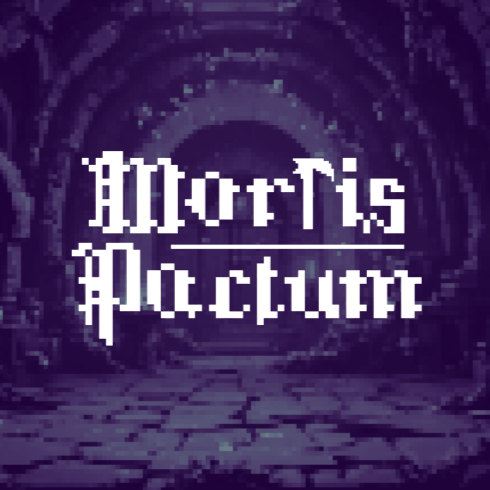

Projects
TeacherCare
TeacherCare is a wearable device-based wellness system that monitors vital signs and classroom conditions in a voluntary and non-invasive way, offering insights to prevent burnout and support mental health. Furthermore, unlike other products, TeacherCare does not collect data intrusively; our product guarantees anonymity, transparency, and a focus on collective well-being, placing the teacher at the center of decisions.
WebsiteMortis Pactum
Mortis Pactum is the game I'm doing in collaboration with my friend and parter Beatriz Loyola.
Mortis Pactum is a story-driven, turn-based RPG where the Knight (controlled by the player) must unite with Death, represented by Mors, to redeem himself for the blood he spilled in life and complete his transition to the afterlife. What has started as a simple game made in Bitsy is now starting to be developed in Unity along with the FORJA Game Studio.
GitHub link (Bitsy version)